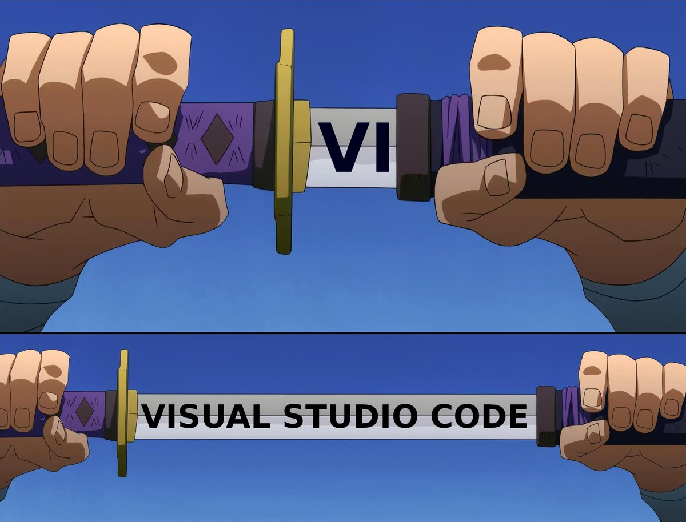

第1章：初识Java
说起这流言，哪个圣贤不挨骂？在编程界，哪个流行的语言不背负一身骂名？Java是被人骂的最多的编程语言之一。毕竟，世界上只有两种编程语言，一种是饱受非议，另一种是无人问津。这一章介绍了Java的历史，从营销角度上来说，Java是第一个被公司营销出来的编程语言。
Java是一门蓝领语言。它不是博士论文材料，而是用于工作的语言。Java对各行各业的程序员来说都似曾相识，因为我们更喜欢经过验证的东西。
——Java之父James Gosling
原话是：Java is a blue collar language. It’s not PhD thesis material but a language for a job. Java feels very familiar to many different programmers because we preferred tried-and-tested things。
这句话来自于1997年James Gosling写的一篇文章《The Feel of Java》。
1 Java简介
Java现在取得了巨大的成功，这往往被看作是必然的。Java赶上互联网的浪潮，但人们往往会忽略这样一个事实：当时，没有多少人认为互联网能成为主流，更不要谈Java可以满足互联网编程的需求。
印度诗人泰戈尔曾经写过：“有时候爱情不是因为看到了才相信，而是因为相信才看得到。”如果把其中的爱情，换成科技，我认为同样成立。
在1995年，Java的创始人James Gosling写了两份文档，在文档中，他相信编程语言应该有的未来，于是创造出了Java。本书，就从这两份文档开始吧。
1.1 Java登场
1995年2月，John Gage受邀参加了一场会议，在会议上，他要发表一篇题为“科技对教育的作用日益显著”的演讲。在演讲的结尾，他想用一个演示软件来展示目前的高科技，为此，他已经花了一个多月来准备这个演示软件。
出生于1942年，Sun公司第21号员工，加州大学伯克利分校数学系肄业。在哈佛大学学习以后，开始对Unix感兴趣，后加入Sun公司，成为Sun公司的技术推广大使，营销界的精英人物。
关于John Gage的介绍，在1996年wired网站上有一篇名为《Power to the People》的文章专门介绍他，链接是：https://www.wired.com/1996/12/esgage
John Gage演示的软件是用Sun公司尚未透露的编程语言写的，该语言的负责人是James Gosling。因为事关重大，James Gosling不放心让John Gage独自演示，于是，两人决定合作完成，演讲的部分由John Gage来做，展示的部分由James Gosling来做。
在演讲的结尾，James Gosling出现在台上，他打开一个网页，上面有一个三维的红色分子模型，与当时人们常见的图片不同，这个分子模型可以随着James Gosling的鼠标放大缩小，旋转跳跃，这种新颖的操作方式，在1995年让在座的科技精英都赞叹不已。
演示所用的技术就是本书的主题：Java编程语言。演示人James Gosling被人称为Java语言之父。
1.2 指导Java发展的两份文档
Java之父James Gosling的故事想必大家已经耳熟能详，如果不太熟悉的话，推荐到国外计算机历史网站Computer History Museum上观看访谈“James Gosling Oral History”, 这个视频共分为为两部分，分别为 https://youtu.be/Yjq3hZXYp_k 和 https://www.youtu.be/LaJtYHvpa68。在这份长达近七小时的访谈中，James Gosling谈了他本人和Java的方方面面。
出生于1955年，加拿大人，Java语言创始人。获美国卡内基梅隆大学计算机科学博士学位，1984年加入Sun公司，在此，他研发了Java编程语言。
1995年2月，James Gosling发布了一篇只有9页的文档来介绍Java，这篇文档的名字叫《Java: an Overview》。这篇文档简明扼要的指出了当时计算机界存在的问题，并且给出了Java的解决方案。
随后在1995年10月，James Gosling和Henry McGilton发布了Java第一版白皮书：《The Java Language Environment》。这篇86页的文档详细的介绍了Java的技术细节。
虽然日后Java发布过多份技术白皮书，但我认为这两份白皮书是Java所有白皮书中最重要的两份。在Java尚未被人所知的年代，James Gosling写的这两份文档，如同明灯一样，指明了Java前进的方向。
现在25年过去了，在计算机领域，25年让计算机软硬件有了长足的发展，但是这两份文档对Java学习仍然非常有指导意义。
这两份文档我读过很多次，坦白来讲，在技术领域，能指出问题的人不少，但是能做到抓住问题核心的同时又能提出有效解决方案的人则凤毛麟角。James Gosling做到了，从1995年到今天，Java的份额一路攀升到第一名，我想，在编程语言领域，没有比被程序员喜欢使用更好的赞美。
接下来，我们一起学习一下这两份文档。看看编程碰到了哪些难题，Java又是如何解决的。
1.3 Java面对的问题以及解决方案
起初，James Gosling并没打算开发一门新的编程语言。
他参与了一个名为Green的项目，这个项目的目标是能让“包括VCR、电话、游戏机、手机、洗碗机等在内的”消费电子产品能够“透明地交互操作”。由于设备类型太多，Gosling的团队碰到了一个棘手的问题，用C++语言支持如此众多的设备，起初可以通过修改C++编译器来解决，随着设备越来越多，最后成了一个“灾难”。于是，James Gosling意识到，是时候做一个新的编程语言了。
和其它编程语言一样，Java的发展史也是一个找到痛点并解决的历史。在软件发展史上，这种情况屡见不鲜，甚至有了专属自己词汇的描述：“dogfooding”。
Dogfooding这个词语来自于“Eating your own dog food”，可以翻译为“吃自己的狗粮”。
在IT业界这句俚语可能最早是于1988年开始使用的。当时微软公司的高级主管保罗·马瑞兹曾写过一封题为“Eating our own Dogfood”（吃我们自家的狗粮）的邮件，在邮件中他向微软局域网管理工具项目的测试主管布莱恩·瓦伦蒂尼提出“提高内部使用自家产品比重”的挑战。
从此以后，这一俚语就传播开来了。
在上世纪90年代，大部分程序员只能在C和C++语言中选择。每家厂商都有自己独特的设备，有互不兼容的操作系统，再加上互联网的兴起，对设备的要求从单机进化到另一个维度：联网。
不止C和C++语言，可供选择的语言如Eiffel，SmallTalk，Objective C都没有为互联网的爆发提供足够的支持。在非网络化的情况下，各种设备和程序相互独立。但是一旦接触到互联网，这些相互独立的设备就要面对未知的环境，原本无关紧要的程序漏洞，在互联网环境下可能会是一个灾难。
所有的一切，让编程越来越困难。
如何能在减轻程序员负担的同时，还能提高开发软件的质量，是Java自始至终一直在解决的问题。那Java是如何做到的呢？
1.3.1 采用熟悉的语法和熟悉的思想
Java的设计者认为，要避免程序员花大量的时间来学习一门风格迥异的语言，最直接的方法莫过于借鉴C和C++的语法，毕竟这是当时最流行的语言。这个策略被证明是非常有效的，大量的C++程序员甚至不需要重新学习，就能用自己C++的经验写Java程序。
Sun公司的创始人Bill Joy对Java的支持功不可没。

出生于1954年，加州大学伯克利分校硕士，在校期间和朋友一起创办了Sun公司，是公司的联合创始人。
在校期间，他是BSD系统的主要设计者，同时还是vi编辑器（本书完全使用该编辑器完成，所以，我经常推荐别人用Vim编辑器，一是为了装逼，二确实挺好用的 :）， 他还是C Shell的作者。

他是Java创始人James Gosling的上司兼好友，Java项目几乎被取消，都是Bill Joy力排众议，持续支持该项目，最终获得成功。
Bill Joy的故事可以参考《Unix Review》杂志在1984年对他的采访，名字是《Interview with Bill Joy》，在访谈中，有关于vi编辑器，Unix等有趣的故事。在线网址是：https://web.archive.org/web/20120210184000/http://web.cecs.pdx.edu/~kirkenda/joy84.html
在语法上，Java不仅继承了C++，还简化了C++，舍弃了一些诸如多重继承，操作符重载比较复杂的特性。同时为了简化编程，Java还增加了诸如内存管理的功能，Java语言可以自动的对内存进行垃圾回收。Michael Feldman曾经这样评价Java：“Java从很多方面来说，就是简化版的C++。”
他评价的原文是：Java is, in many ways，C++--。
如果你是有一定经验的程序员，同时写过Java与C/C++，就会意识到，其实Java仅仅是在语法的层面上与C/C++相似，实质上，Java的实现更接近Lisp和Smalltalk那样的动态语言。
Java集百家之长成一家之言，不仅借鉴了C和C++语言，在文档中，Java从不隐瞒这一点，宣称自己的独创性，反而对其它语言的优秀特性大加赞扬，会直言从哪种语言中获得灵感，比如在动态性方面，就从Objective-C借鉴了很多想法。在本书中，我会尽量对这些特征一一考证。
本书会有大量的章节讨论Java的语法和面向对象的问题，包括第5章和第6章的基本操作符和基本语法，第3章、第9章、第10章、第11章等章节都是讨论面向对象的问题。
1.3.2 改善可移植性
取得成功的编程语言，一定要兼顾这三个方面：运行速度、可移植性与安全性。同时满足运行速度与可移植性的语言就很少，更不要说还要兼顾安全性了。一般来说，运行速度快的语言，可移植性不高，可移植性高的语言，又难以做到兼容性。
用C语言写的Unix操作系统也被广泛的宣传具有强大的可移植性，但是这种“可移植性”是建立在对每一种机器要修改的基础上，比如有的机器int是16位的，有的机器是32位的，还是要根据不同的CPU进行代码的修改，然后才能做到可移植性。
在网上有一本神书叫《Unix痛恨者手册》，是一群Unix的讨厌者写的书。
书写完以后，请C语言与Unix系统的开发者丹尼斯·里奇写序言，丹尼斯·里奇也不客气，痛骂了本书，这本书把这个痛骂自己的话原封不动的当了序言。
网上有本书的中文翻译版，如果你找不到，可以到我的个人网站上去下载: https://liuyandong.com 或者到https://xueban.app这个社区下载。
Java的出现，真正实现了可移植性。在Java里，所有的基本数据类型的大小都是规定好的，不会随着CPU的变化而变化。比如说，在Java中，所有的int意味32位，所有的float都是实现的IEEE 754，这极大的方便了程序员的工作。
但是这并不是没有代价的，C语言为了可移植性牺牲了语言的功能，Java为了可移植性牺牲了部分运行速度。
在本书的第4章，我们会来详细讨论可移植性与基本数据类型这个问题。
1.3.3 采用解释执行
Java语言是一种解释型语言，只要将Java源程序编译成字节码，这些字节码就可以直接在Java虚拟机上运行。相比于编译，链接是一个要轻量级的过程，因此开发的过程要更快一些。 你可以想象一下现在为什么大家都喜欢用“热更新”的方式来开发App，因为更轻量级，方便。
因为这份文件是历史文档，Java 1.0的时候，只提供了一个纯解释的运行环境，现在已经有所改变。
等一会我们再来讨论Java到底是编译执行还是解释执行这件事。
毕竟25年过去了，Java在这方面有了长足的进步，从某种意义上来说，现在的Java已经不完全是James Gosling在1995年的规划。尤其在Java是一个纯解释语言这一点上，发生了重大的变化 。现在的Java早已经是兼具编译型和解释型语言的特点。
关于这方面内容，我会在第二章，和大家详细的研究Java虚拟机，Java编译器各自的作用。在1995年的文档里，James Gosling给出了一个数据，在一台SS10电脑上，用解释器运行Java，每秒钟可以调用30万次函数，这个数据和C/C++写的软件没有明显的差距。Java虚拟机进化了多年，现在人们已经对Java的性能没有太多质疑，有很多的数据支持显示，Java是运行最快的语言之一。
Java，C，C++，汇编……在一艘船上，船漏水了，为了保证其它人的安全，决定扔两个人下去。规则是讲笑话，只要有一个人不笑，就把讲笑话的人扔下去。
汇编是讲笑话的高手，他讲了一个笑话，把其它人都笑弯了腰，只有Java没笑，按规则，汇编被扔了下去。第二个轮到C语言讲了，C语言还没开口，Java就笑弯了腰，众人不解，问Java笑什么？
Java回答：“刚才汇编的笑话太好笑了！”
目前来说，Java的运行速度已经不再是问题，著名的游戏公司ID Software已经开源了其第一人称射击游戏Quake2的源代码，随后，有人将此引擎移植为Java项目,这个项目名为Jake2，完整的代码可以在github网站上找到。具体的链接如下: https://github.com/demoth/jake2 。如果Java的性能足够满足第一人称射击游戏的要求，那么肯定可以满足商业程序的要求。
Java代码的执行速度是不稳定的，高度依赖于运行平台与Java虚拟机。即使是同样一份代码，不做任何改进，在比较新的Java虚拟机上基本上运行速度都会有所提升。
最初的Java采用解释执行的原因是Java非常的务实，对性能的态度一贯是只要能提高开发效率，就可以牺牲原始性能。也正是因为这个原因，只有到了近些年，诸如HotSpot之类 Java虚拟机日益成熟后，高性能计算领域才开始采用Java进行开发。
在设计语言和平台的时候，经常对需要的功能与运行效率之间进行平衡。如果要更“接近机器”，那么就有可能“降低开发效率”。C++的作者一直推崇他的“零成本原则”，这条原则的内容如下： C++遵从零成本原则：不需要为用不到的功能付出代价。再进一步，你要用的东西，性能已经达到极致了，就算再优化也不会有更好的性能了。
这个原则听起来是非常好的，但是对绝大多数人没什么用。因为对绝大多数来来说，自己没法掌控软件运行所依赖的底层机制，都是要借用别人写的操作系统来运行自己的代码。如果还要追求零成本的运行代价，开发人员就要付出巨大的认知代价，要搞清楚计算机是如何运行的，并不容易。
像C/C++所采用的跨平台方法是预先编译（Ahead of Time, AOT），对不同的平台要分别编译，势必要详细了解那种平台的机器代码。这个原则是为像C++作者这种级别的绝顶高手量身定做的，这里的零成本隐藏了太多东西。高手能实现的零成本解决方案，比如人家很容易实现一个解释器，对其他人的成本可能就太高了。
Java不认可零成本原则，Java做出的取舍是：借鉴C/C++的预先编译，同时又不放弃解释执行。通过这种方法，可以降低写软件的难度。
2 Java版本进化史
我写书的时候，写了很多这方面的内容，但是现在想起来，没什么用处。直接跳过吧。
有一点需要注意，Java历史悠久，同时也意味着包袱沉重。Java是极其成功的语言，打入了大量关系国计民生的行业，比如能源、医疗、金融…… 这些行业是不可能乱更新的，因此你工作之后，会出现这样的情况，这个软件可能跟你是同龄，或者比你小不了几岁。
一般来说，如果它是Java 5写的，你就不能够更新成Java 21。你要知道，在一个能源部门，没有人可以承担这种责任，也没有人想承担这种责任。你大概只能按照那时候的Java版本来写软件，Java 5， Java 8……
旧版本不能用到新功能，如果你“不幸”工作中用到的是一个古老的Java版本，到时候再自己查书查资料吧。
3 小朋友，你是不是有很多问号？
3.1 为什么James Golsling被称为终身仁慈独裁者？
Java的创始人James Gosling被称之为BDFL。
BDFL的意思是终身仁独裁者BDFL（Benevolent Dictator For Life）是极少数软件开发者能拥有的头衔，一般是某个语言、某个项目的创始人。当软件社区出现争议并且无法和平解决的时候，要有一个最终的话事人来解决纷争。其它耳熟能详的BDFL有Linux的开发者Linus、Python的开发者吉多·范罗苏姆、Perl的作者Larry Wall、LLVM的设计者Chris Lattner等等。
能够当BDFL的人，要有很强的领袖气质，能以德服人。而且，在编程领域中，独裁者是会“体面”的离开的。
不止Java，像Python，JavaScript语言，都经历了开始主要由一个人主导，后来一个委员会主导，到最后，语言的创始人离开。2018年7月12日，Python 创始人 Guido van Rossum发邮件决定离开Python决策层，不再领导Python语言的开发。有兴趣的读者，可以找来那封信读一下。
最后，终身仁慈独裁者，跟传统政治上的独裁者是两码事，举目全球，传统政治行业上的独裁者几乎没有了。
3.2 Java的名字是谁起的？
以目前能找到的资料，Java项目最开始的时候，名字并不是Java，而是Oak。之所以叫Oak，是因为在James Gosling的办公室外有一棵橡树。当时有一家已经存在的公司叫Oak Technologies，只能改名。
Javaworld曾经写了一篇文章叫《So why did they decide to call it Java?》，网址：https://www.javaworld.com/article/2077265/so-why-did-they-decide-to-call-it-java-.html
原来起名的时候有几个候选，分别是Silk、Lyric、Pepper、Java。当时的产品经理Kim Polese提出了这个名字。
3.3 James Gosling如何回答相比于C语言，Java不够自由？
James Gosling对此的解释是：“对Java来说，规矩有很多，一旦你适应了规矩，那么Java将是一种自由的语言。”他还以飞机为例打了个比方，在螺旋桨时代，飞机非常的自由，飞行员可以打开窗户，呼吸新鲜的空气，可以通过肉眼来观察方向。到了喷气式飞机时代，飞机的窗户是不能打开的，如果你打开，在3马赫的速度下，飞行员的脑袋将会被吹走。
最后，他总结说：“如果你想进一步让自己自由，就要放弃一些看起来是自由的东西。”
我不知道为什么，看到James Golsing讲这句话的时候，我脑海中想到的是阿尔贝·加缪写的《西西弗神话》，在一个看似没有意义的世界中，我们应该如何找到意义和应对编程、甚至生命的荒诞感。在加缪的哲学中，自由不仅仅是选择的能力，而是承担选择后果的责任。
这一点，倒是与James Gosling有相通之处。
3.4 Java的现状怎么样?
无论是从找工作还是从学习编程的角度，Java都是一门不可忽视的语言。
大家只要打开搜索引擎或者GitHub网站，查找一下语言的排名，或者在找工作的网站上看一下，就知道Java始终是最热门语言之一。写这本书的时候，我在找工作的网站dice.com上使用关键字Java时行了搜索，有11,153个工作，用Python当关键字，有6,395个工作，用JavaScript，则有8,634个工作。这些结果应该相对直观的反应了市场需求。如果你的目标是学好英语，找外国的远程工作，Java还是不错的。
从学术和技术角度来看，现在越来越多语言都是基于Java实现，运行在Java虚拟机之上。比如Groovy、JRuby、Scala、Jython、Clojure这些语言，都是如此，只要能运行于Java虚拟机，就是站在巨人的肩膀上，有了与生俱来的跨平台特征。从这个角度来看，学会Java，能更深入的了解这些语言。
业界有一句名言：“没有人因为选择Java而被解雇。”这句话的潜台词是：Java的背后有大公司的支持，这意味着可以得到某种保证，保证Java能得到积极维护和开发，具有繁荣的生态系统和社区，并已经Java已经在大型业务环境经受了考验。企业就喜欢这样的技术，可以减少技术选型的风险。这也是Java长期排名前茅的原因。
我还是想扯一点闲篇。我老家有句叫“工字不出头，出头入黄土”。这里的“工”有很多的解释，可能是“工人”，可能是“工资”，可能是“工程师”，可能是“打工”……因为你在学习Java，可能梦想是当个“软件工程师”，好吧，这也算“工”的一种。
亲爱的读者，靠这个“工”，是很难出头的，包括“打工”的“软件工程师”。本书的作者——也就是我，寒窗二十年，打工十余载，一事无成——已经证明了这一点，证明了我老家人的智慧，多么痛的领悟啊！不要试图靠“工”改命。
那靠什么？我还不知道，如果我知道了，我会在这里更新的。也希望你能告诉我，我的电子邮件是liuyandong@gmail.com。感恩贵人的不吝赐教。
4 程序员故事
我很喜欢写小说，总是臭显摆一下。在一本编程书里写小说，纯粹是浪费纸张。但是在网上，不差这几K的流量，所以，请允许我，把以前写的小说放在这里。我尽量在每一章后面，写一则程序员的小故事，有些是真的，有些是杜撰的。
如果你不想看，直接略过就好。